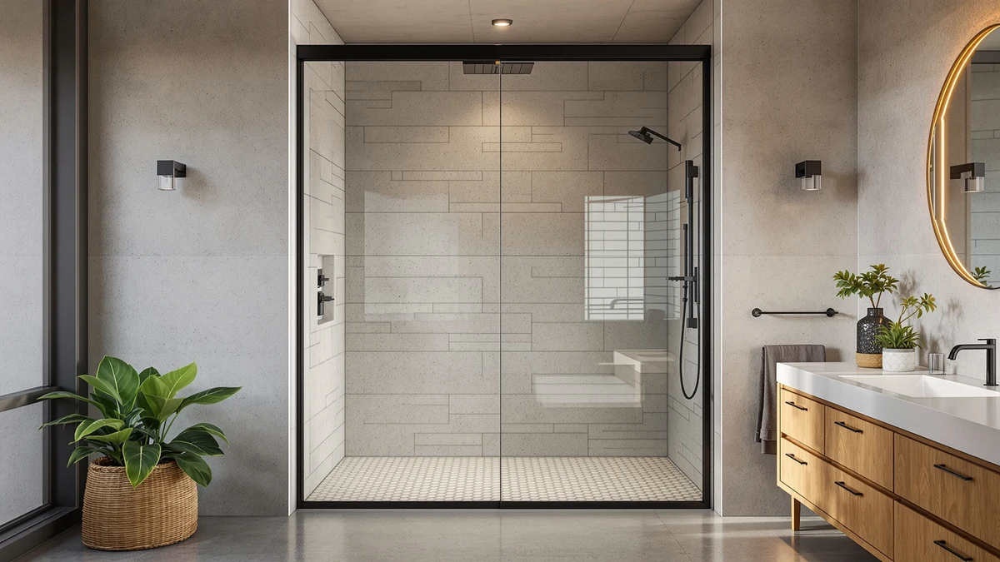

Best Shower Door Water Repellent (2026)
Prices and picks verified as of November 2026. Independent, reader-supported reviews.


Quick Answer
The fix depends on which problem you actually have: glass that spots and hazes needs a hydrophobic spray like Rain-X, while a door that lets water onto the floor needs a seal, a threshold barrier, or a full replacement. For most people replacing a whole leaking enclosure, the EPXMKX 60 by 76 frameless door below is the pick we land on, since it closes both problems with seals built into the frame rather than patched on afterward.
Our pick: EPXMKX 60" W x 76", $489.99 Check Price on Amazon
Bottom line: our top pick is the EPXMKX 60" W x 76" H Soft Closing Sliding Frameless Shower at $489.99. The best budget option is the Raycity 10 Feet Shower Door Side Seal Strip - for 3/8" at $14.99.
Things to Know Before You Buy
- A water repellent spray treats the glass, not the door. Hydrophobic coatings like Rain-X make water bead and run off the surface, which cuts down on spotting and hazing, but they do nothing for a gap at the bottom sweep, hinge or threshold.
- Find the actual leak before you buy anything. Water pooling under the door points to a worn bottom sweep, a drip along the hinge or center gap points to a side strip, and water crossing the floor at a curbless entry points to a threshold dam instead.
- Glass thickness has to match. Most frameless doors use 1/4 inch (6mm) or 3/8 inch (10mm) tempered glass, and a seal sized for the wrong thickness will not grip the edge or will leave a gap water finds within days.
- A glass treatment is maintenance, not a one-time fix. Squeegee use and soap contact wear down a hydrophobic coating over weeks, so reapplying on a schedule keeps it working.
- A full replacement door resets everything at once. If the frame, glass and seal are all failing together, a door that ships with its own seal built in avoids trying to match a new strip to aging hardware.
- Prices here range from under $19 to nearly $490. Most leaks are a $15 to $25 seal fix or a $19 glass treatment; the pricier option is a full door replacement, not a better repellent.
The best shower door water repellent setup depends on which of two problems you actually have. Glass that beads water everywhere except where you squeegee it needs a hydrophobic coating. A door that lets water past the frame and onto the bathroom floor needs a physical seal, and no amount of glass spray will fix that second problem.
We compared seven products that approach this from different angles: a hydrophobic glass spray, four seal and sweep options, a threshold barrier, and one full replacement door. We read the published specs, measured dimensions and verified owner reviews for each, since treating glass to repel water and sealing a door against leaks call for different fixes rather than one universal product. The EPXMKX 60-inch by 76-inch frameless door, at $489.99, is the pick we land on for an enclosure where the problem is the hardware itself, because it ships with seals already built into the frame instead of asking you to patch water repellent fixes onto failing parts.
Below, we break down each pick by the specific leak or spotting problem it solves, the honest limits owners run into, and where it sits in price against the rest of the field. We also cover a full comparison table, the products we skipped, and the questions that come up most before buying a shower door water repellent fix.
Why You Should Trust Us
Best Shower Doors is run by Ilane Tall, who has covered bathroom fixtures and shower hardware for a US audience for years. We do not run a fake testing lab and we do not invent star ratings or review counts for products that do not have them. We read the actual product listings and spec sheets, cross-check glass thickness and dimensions, and dig through verified owner reviews to see which shower door water repellent fix actually solves the problem it claims to, rather than which one reads best in the listing copy. Every Amazon link here is affiliate-tagged, which supports this site at no cost to you and never changes which product we recommend.
How We Picked
We started with products that address shower door water problems from every common angle: a hydrophobic glass treatment, bottom sweeps, side strips, a threshold dam, and a full replacement door, rather than assuming one type of fix covers every bathroom. We filtered seal strips on glass-thickness compatibility first, since a 1/4-inch strip will not seal a 3/8-inch door and the reverse is also true. We weighed price against the scope of each fix, since a $19 spray, a $23 threshold barrier and a $490 replacement door are solving different problems, and we read through verified buyer feedback for recurring complaints about fit, adhesion or coatings that wear off faster than expected. The seven picks below cover that range: one glass treatment, four seal and sweep styles, one threshold barrier, and one complete door for a bathroom past the point where a patch will help.
How We Compared
We are upfront about method here. We did not install or apply all seven of these in a test bathroom. Instead, we compared each shower door water repellent option on the specs that are published and verifiable: glass-thickness compatibility, listed dimensions, coverage amount, and construction. We weighed that against patterns in verified owner reviews, since the real test of a seal or a coating is whether it still works months after installation, not on day one. If reviewers repeatedly mention the same issue, such as a coating that needs more frequent reapplication than expected or a strip that requires careful trimming, we call it out in the flaws for that pick rather than leaving it out.
Our Picks

EPXMKX 60" W x 76"
What we like
- Replaces the frame, glass and seal as one matched unit instead of retrofitting a strip onto hardware that is already worn
- Sized at 60 inches wide by 76 inches tall, a size that fits a standard US shower opening without custom cutting
- Starting fresh resets the whole water-repellent system at once, rather than chasing leaks one gap at a time
Flaws but not dealbreakers
- At $489.99 it costs far more than any seal, sweep or spray in this comparison
- Only fits a 60 by 76 inch opening, so it will not help a door outside that size
| Material | — |
| Size | 60 inches x 76 inches |
The EPXMKX is the option for a shower where a new seal strip or a bottle of glass treatment will not fix the underlying problem. At 60 inches wide by 76 inches tall, it replaces the door, the frame and the seal in a single purchase, which matters once a current enclosure's leak keeps returning even after you have swapped the bottom sweep or treated the glass more than once. A warped frame or a stretched track defeats a brand-new strip as surely as old, pitted glass defeats a spray, and in that case neither one was ever the real problem.
Because the door arrives as one unit, you skip the guesswork of matching a universal seal to an opening that may already be slightly out of square. The trade-off is straightforward: at $489.99 this is a full-door purchase, not a quick patch, and it only fits the 60 by 76 inch range, so measure your opening before you order. For a bathroom where the enclosure has earned a reset rather than another repair, it is the shower door water repellent fix that upgrades everything around it too.

Rain-X 630542 Shower Door Water
What we like
- A wipe-on hydrophobic treatment that makes water bead and run off the glass instead of sheeting into hard-water spots
- Comes as two 16-fluid-ounce bottles, enough for repeat applications across more than one door or several months of upkeep
- At $19.12 for both bottles, it is one of the least expensive ways to address spotting in this comparison
Flaws but not dealbreakers
- The coating wears down with regular squeegee use and soap contact, so it needs reapplying rather than a single application lasting indefinitely
- Treats the glass surface only, so it will not help a door leaking at the seal or threshold
| Material | — |
| Size | 16 Fl Oz. (Pack of 2) |
A true shower door water repellent, in the literal sense, is this one: a hydrophobic spray you wipe onto clean glass so water forms beads and runs off rather than drying into the hazy mineral spots that hard water leaves behind. The Rain-X 630542 ships as two 16-fluid-ounce bottles, which covers more than one door or carries you through several reapplications on the same door as the coating wears thin.
At $19.12 for the pair, it sits near the bottom of the price range here, and it stays focused on what it actually changes: the surface of the glass, not the seal around it. Owners who use these glass treatments regularly report that the effect fades with use and needs refreshing every few weeks to a couple of months, so budget for reapplication rather than expecting one coat to last a year. If your real problem is water escaping under or beside the door, pair this with a seal strip rather than expecting the spray alone to stop a leak.

2-Pack Butecare Frameless Shower Door
What we like
- Comes as a 2-pack, so you have a spare the next time the first sweep stiffens or cracks
- Sized specifically for 3/8-inch glass, which avoids the gap a universal strip leaves on the wrong thickness
- At $21.99 for two, it is one of the lower costs per seal in this roundup
Flaws but not dealbreakers
- Only fits 3/8-inch glass, so it will not work on a thinner 1/4-inch door
- Covers the bottom edge only, so water escaping at the hinge or center gap needs a separate fix
| Material | — |
| Size | Bottom sweep -3/8'' |
Water spotting on the glass is a cosmetic problem. Water pooling on the floor outside the shower is a different one entirely, and the Butecare 2-pack addresses the second by replacing a worn bottom sweep on a 3/8-inch frameless door. That thickness match matters more than most buyers expect, since a seal built for 1/4-inch glass will not grip a thicker door's edge, leaving a gap that defeats the whole point of keeping water where it belongs.
Buying the pair means the next replacement is a five-minute swap using a spare already on hand, rather than a delayed order while water keeps finding its way out. At $21.99, this sits near the budget end of the picks here, and it stays focused on one spot: the bottom edge. If water is also escaping along the hinge side or the center gap, pair it with a side strip instead of expecting one sweep to cover the whole door.

Yecaye 3 Pack 3/8" x
What we like
- Three 39-inch strips sized for 3/8-inch glass, enough to replace the seal more than once without reordering
- Keeping spares on hand turns a cracked seal into a five-minute swap instead of a delayed order
- Sized specifically to 3/8-inch glass, so it seats flush instead of leaving a gap
Flaws but not dealbreakers
- At $22.99 for the pack, it costs more upfront than a single Butecare seal, even though you get two extras
- Fixed at 3/8-inch compatibility and a 39-inch length, so it needs trimming or will not fit a differently sized door
| Material | — |
| Size | 39" x 3/8" (3pcs) |
Seals discolor and stiffen over time, often faster than owners expect in a bathroom that sees daily use, and the Yecaye pack plans around that instead of waiting for it to become a leak. Three 39-inch strips, each sized for 3/8-inch glass, mean a yellowed or split seal becomes a quick swap using a spare you already own rather than a gap that lets water through while you wait for a new order.
At $22.99, it costs more upfront than a single strip from the Butecare pick, but the per-seal price works out lower once all three are counted. The fixed 39-inch length and 3/8-inch compatibility mean it is built for a specific class of door, so measure glass thickness and sill length before ordering, and trim to fit if the opening runs shorter. For a household that would rather keep a spare on hand than deal with a leak twice, it is a practical way to buy ahead.

Raycity 10 Feet Shower Door
What we like
- Sold in a 10-foot length, which covers runs a pre-cut, fixed-length seal cannot reach
- At $14.99, it is priced like the other budget strips despite the extra length
- One long piece can seal more than one gap on the same door
Flaws but not dealbreakers
- You cut and fit it yourself rather than installing a pre-sized strip straight out of the package
- No listed material or thickness spec here, so measure the door and check fit carefully before committing
| Material | — |
| Size | — |
Most seals on this list come pre-cut to a standard length, which works until a door runs longer than standard or needs more than one gap sealed. The Raycity strip is sold by the foot instead, in a 10-foot length, so you are not piecing together two short strips to cover one long edge or buying a second kit for a second gap on the same door.
At $14.99, it is priced close to the other budget picks here even though it includes noticeably more material, which is the trade-off worth knowing upfront: you are buying length, not a pre-fitted part, so scissors and a careful measurement of the actual gap come before cutting. For a nonstandard door, a tall panel, or a household sealing more than one gap at once, that flexibility is the whole appeal of this shower door water repellent fix.

Zehiels 67" Shower Threshold Water
What we like
- Addresses the shower threshold itself rather than the door, which helps on curbless or low-curb showers where a glass treatment or door seal cannot reach the floor gap
- At 67 inches, it spans a wide shower entry in one piece
- The collapsible design folds down out of the way instead of becoming a permanent step
Flaws but not dealbreakers
- It solves a floor-level leak, not a glass or seal problem, so pair it with a treatment or strip if water is also escaping at the door itself
- At $23.99, it is one of the pricier individual options here, not counting the full replacement door
| Material | — |
| Size | — |
Not every shower leak starts at the door. On a curbless or low-curb shower, water can cross straight over the threshold onto the bathroom floor no matter how well the glass repels water, and no spray or seal strip fixes that, because the gap is not on the door at all. The Zehiels barrier addresses the floor instead, spanning 67 inches across the shower entry in one piece.
Its collapsible design folds down when overflow is not a concern, rather than sitting as a permanent step to climb over every time you shower. At $23.99, it is one of the pricier single-piece options here, and it is worth being clear about what it does not do: it will not stop water spotting the glass or leaking at a hinge, so a door with those problems still needs a treatment or a seal strip in addition to this barrier.

GENNHOPO 2-Pack ShowerDoor Bottom Seal
What we like
- At $18.29 for two, it undercuts the Butecare and Yecaye bottom seals on price
- Sized for 10mm (3/8-inch) glass, so it seats flush instead of leaving a gap on the common frameless thickness
- The 2-pack format leaves a spare ready for the next time the seal wears out
Flaws but not dealbreakers
- Only fits 10mm glass, so it is the wrong choice for a thinner 1/4-inch door
- Covers the bottom edge only, the same leak point as the other sweep picks here
| Material | — |
| Size | 3/8''(10mm) |
If the only thing standing between a dry floor and a puddle is a cracked bottom seal, the GENNHOPO 2-pack fixes it for less than any other full seal in this comparison. At $18.29 for two strips sized for 10mm glass, it undercuts the Butecare and Yecaye picks while covering the same job: keeping water inside the shower along the bottom edge of a frameless door.
The trade-off for that price is the same one every bottom-only seal shares here: it addresses the bottom edge and nothing else, so a leak at the hinge or center gap still needs a side strip, and a curbless threshold still needs a barrier like the Zehiels pick. For a straightforward dripping-edge problem on 10mm glass, it is the most direct way into this list for anyone keeping the budget tight.
Quick Comparison
| Product | Material | Price | Rating | Best for | Get it |
|---|---|---|---|---|---|
| EPXMKX 60" W x 76" | — | $489.99 | — | Replacing a whole leaking enclosure at once | View on Amazon → |
| Rain-X 630542 Shower Door Water | — | $19.12 | — | Treating hard-water spotting on the glass | View on Amazon → |
| 2-Pack Butecare Frameless Shower Door | — | $21.99 | — | Stopping water at a 3/8-inch door's bottom edge | View on Amazon → |
| Yecaye 3 Pack 3/8" x | — | $22.99 | — | Keeping spare bottom seals on hand for a 3/8-inch door | View on Amazon → |
| Raycity 10 Feet Shower Door | — | $14.99 | — | Custom-length cuts on nonstandard doors | View on Amazon → |
| Zehiels 67" Shower Threshold Water | — | $23.99 | — | Curbless showers leaking at the threshold | View on Amazon → |
| GENNHOPO 2-Pack ShowerDoor Bottom Seal | — | $18.29 | — | The cheapest 10mm bottom seal in this lineup | View on Amazon → |
The Competition
We looked at several universal water-repellent sprays that claim to work on any surface, including windshields, mirrors and shower glass, and set most of them aside. Reviewers consistently note that formulas built for painted cars or windshields do not bond to shower glass the way soap scum and hard water require, and several owners describe reapplying within a week with little lasting effect, which makes a poor case for the product as a dependable shower door water repellent. We also passed on a handful of unbranded resealing kits with no listed glass-thickness compatibility, since a seal that does not state what it fits is a guess rather than a fix, and a vague listing is the surest sign nobody has verified it against a real door.
Whether the problem is glass that spots or a door that leaks, the Rain-X spray and the seal strips above cover most bathrooms without replacing anything structural. For an enclosure where the frame, the glass and every seal are failing at once, the best shower door water repellent fix is still the EPXMKX 60-inch by 76-inch door, because it resets the whole system instead of patching one more failure point.
What these prices have actually done
We check the price of every product on this page every hour and keep the record. These figures are observations, not estimates or forecasts.
- EPXMKX 60" W x 76" H Soft Closing Sliding Frameless Shower Doors has ranged from $391.99 to $489.99 across 34 hourly price checks since September 27, 2026. It was $489.99 at the last check.
- Rain-X 630542 Shower Door Water Repellent has ranged from $16.51 to $19.55 across 35 hourly price checks since September 27, 2026. It was $19.25 at the last check.
- 2-Pack Butecare Frameless Shower Door Bottom Seal for Glass Doors has held at $21.99 across 34 hourly price checks since September 27, 2026. It was $21.99 at the last check.
- Yecaye 3 Pack 3/8" x 39" Shower Door Bottom Seal has ranged from $20.79 to $22.99 across 35 hourly price checks since September 27, 2026. It was $22.99 at the last check.
- Raycity 10 Feet Shower Door Side Seal Strip has ranged from $11.19 to $14.99 across 34 hourly price checks since September 27, 2026. It was $14.99 at the last check.
- Zehiels 67" Shower Threshold Water Dam Silicone Shower Water Guard has held at $23.99 across 35 hourly price checks since September 27, 2026. It was $23.99 at the last check.
Last updated November 9, 2026. Amazon prices change constantly; the figure you see on Amazon right now is the one that counts.
Frequently Asked Questions
Does a water-repellent spray actually stop a shower door from leaking?
No. A hydrophobic spray like Rain-X changes how water behaves on the glass, making it bead and run off instead of spotting, but it does nothing for a gap at the bottom sweep, hinge or threshold. A door that lets water onto the floor needs a seal strip or a threshold barrier, not a glass treatment.
How long does a water-repellent glass treatment actually last?
Most hydrophobic sprays wear down with regular squeegee use and soap contact, and owners generally reapply every few weeks to a couple of months depending on how often the shower gets used. Treat it as routine upkeep, similar to resealing grout, rather than a one-time fix.
Is it better to treat the glass or replace the door seal?
Match the fix to the actual problem. Hard water spotting and hazing the glass calls for a treatment like Rain-X. Water crossing the bottom edge, hinge or threshold onto the floor calls for a seal strip, a threshold dam, or in a worse case a full replacement door like the EPXMKX, since no glass spray substitutes for a physical seal.